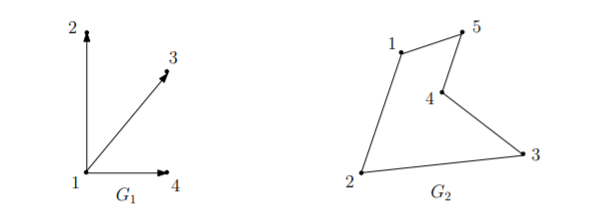
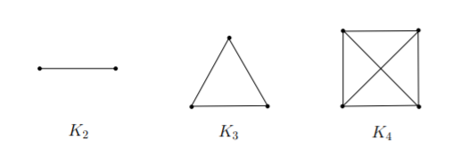
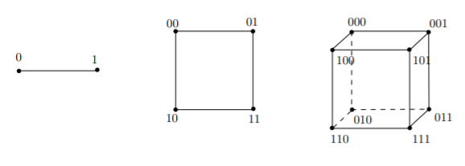

Graph Theory¶
Formally, an undirected graph \(G=(V,E)\) is defined by a set of vertices \(V\) and a set of edges \(E\). Each edge is a pair \(\{u,v\}\). We represent the vertices of the graph as points, and the edges as line segments (or curves) connecting them. In graph \(G_2\), the vertex set \(V\) is \(\{1,2,3,4,5\}\), and the edge set \(E = \{\{1,2\},\{2,3\},\{3,4\},\{4,5\},\{5,1\}\}\).
More generally, we can also define a directed graph. A directed graph \(G=(V,E)\) again consists of a set of vertices \(V\) and a set of edges \(E\), with the difference that now an edge is an ordered pair of vertices \((u,v)\). In other words, \(E\) is a subset of the Cartesian product \(V\times V\).
Unlike the undirected case, the edge \((u,v)\) is not the same as edge \((v,u)\). A directed graph is also represented as a set of points \(V\) and the edge \((u,v)\) is now shown as a directed line segment, or arrow, from \(u\) to \(v\). In the below graph \(G_1\), the vertex set is \(V=\{1,2,3,4\}\) and the edge set \(E=\{(1,2),(1,3) ,(1,4)\}\). Note that \((1,2)\) is an edge of \(G_1\), but \((2,1)\) is not.

Directed graphs are more general than undirected ones as the latter are essentially directed graphs in which every edge \((u,v)\) is accompanied by its reverse \((v,u)\).
An edge \(e\) is incident on vertices \(u\) and \(v\), and that \(u\) and \(v\) are neighbors or adjacent. If \(G\) is undirected, then the degree of vertex \(u\in V\) is the number of edges incident to \(u\), i.e. \(degree(u)=|\{v\in V: \{u,v,\}\in E\}|\). A vertex \(u\) whose degree is 0 is called an isolated vertex, since there is no edge which connects \(u\) to the rest of the graph.
A directed graph has two different notions of degree due to the directions on the edges. Specifically, the in-degree of aa vertex \(u\) is the number of edges from other vertices to \(u\), and the out-degree of \(u\) is the number of edges from \(u\) to other vertices.
Finally, our definition of graph thus far allows self-loops, edges of the form \(\{u,u\}\) or \((u,u)\). However, this usually gives us no interesting information, so we should assume our graphs have no self-loops unless otherwise specified. Edges that allow self-loops and multiple edges are often referred to as multigraphs.
Letting \(G=(V,E)\) be an undirected graph. A walk in \(G\) is a sequence of edges \((e_1,\cdots,e_{n-1})\) for which there is a sequence of vertices \((v_1, \cdots,v_n)\) such that \(e_i=\{v_i,v_{i+1}\}\) for \(i=1,2,\cdots,n-1\). A walk with no repeated edges that begins and ends at the same vertex is a tour.
A walk with vertice sequence \(v_1,\cdots,v_n\) is a path if all vertices and edges are distinct. A cycle is a tour where the only repeated vertex is the start and end vertex.
A graph is said to be connected if there is a path between any two distinct vertices. If there is any vertex that cannot be reached from any other vertex, the graph is disconnected.
Complete Graph¶
The simplest class of graph is the complete graph. They contain the maximum possible number of edges (i.e. every pair of (distinct) vertices \(u\) and \(v\) is connected by an edge \(\{u,v\}\). Complete graphs are denoted by the notation \(K_n\), where \(n\) denotes the number of vertices.

Formally, we can write \(K_n=(V,E)\) for \(|V|=n\) and \(E=\{\{v_i,v_j\}|v_i\not = v_j\text{ and }v_i, v_j\in V\}\).
A complete graph is special in that each vertex is connected by an edge to every other vertex. Thus, such a graph is very “strongly connected” in that a large number of edges must be removed before we disconnect the graph into two components, which can be a desirable property in certain applications.
Much less common is a complete directed graph, one in which for any pair of distinct vertices \(u,v\), both edges \((u,v)\) and \((v,u)\) are present.
Trees¶
If complete graphs are maximally connected, trees are the opposite: removing any edge disconnects the graph. The following are all equivalent and interchangeable definitions of a tree:
\(G\) is connected and contains no cycles.
\(G\) is connected and has \(n-1\) edges (where \(n=|V|\)).
\(G\) is connected and the removal of any single edge disconnects \(G\).
\(G\) has no cycles, and the addition of any single edge creates a cycle.
Many graph-theoretical problems are computationally intractable on arbitrary graphs, but easy to solve on trees. Another reason we use trees is that they model many types of natural relationships between objects.
Hypercubes¶
We have discussed how complete graphs are a class of well-connected graphs. But in many cases, an exponentially large number of edges is required, and we do not always need such strong connectivity. A more useful alternative is the hypercube in some cases.
The vertex set of the \(n\)-dimensional hypercube \(G=(V,E)\) is given by \(V=\{0,1\}\), where recall \(\{0,1\}^n\) denotes the set of all \(n\)-bit strings. In other words, each vertex is labelled by its unique \(n\)-bit string. The edge set \(E\) is defined as follows: two vertices \(x\) and \(y\) are connected if and only if \(x\) and \(y\) differ in exactly one-bit position, e.g. \(1100\) and \(1000\).

An alternative, recursive definition begins by defining the \(0\) and \(1\)-subcube as the \((n-1)\)-dimensional hypercube with vertices labeled by \(0x\) for \(x\in\{ 0,1\}^{n-1}\) (and respectively, 1x). Then the \(n\)-dimensional hypercube is obtained by placing an edge between each pair of vertices \(0x\) and \(1x\) in the 0 and 1-subcube respectively.